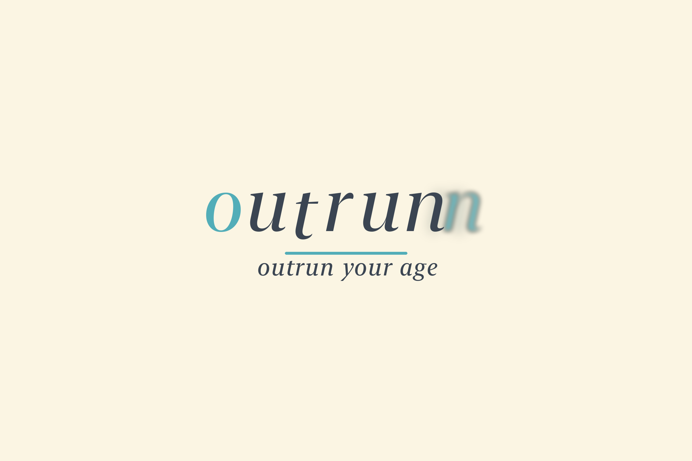

outrunn: outrun your age
outrunn estimates your biological, cardiac, and pulmonary age from a short phone camera scan and the sleep, steps, and heart data already in Apple Health. The numbers come from a fixed formula on your phone. A coach then explains what is moving them and suggests a recovery plan.
-
Scan
Hold still for a minute. The camera reads pulse and breathing. No video is stored.
-
Understand
See each age next to your real one, and exactly which inputs add or remove years.
-
Recover
Get a plain plan for today and this week, and ask roadrunner about your numbers.
Coming to iOS